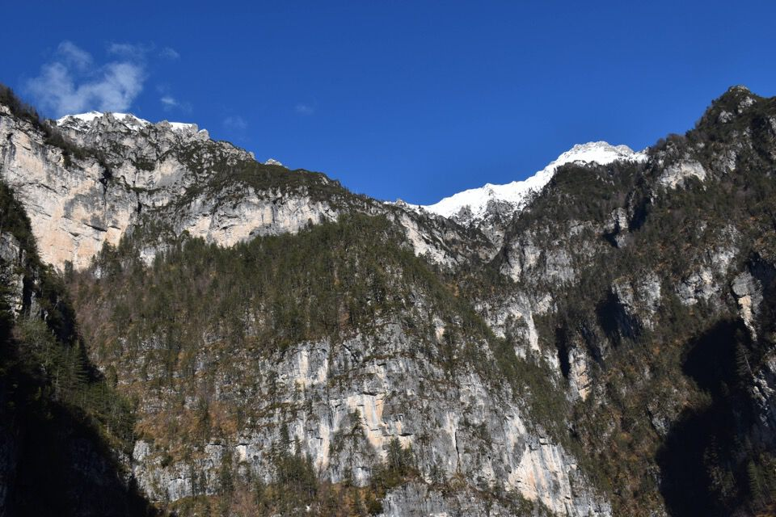
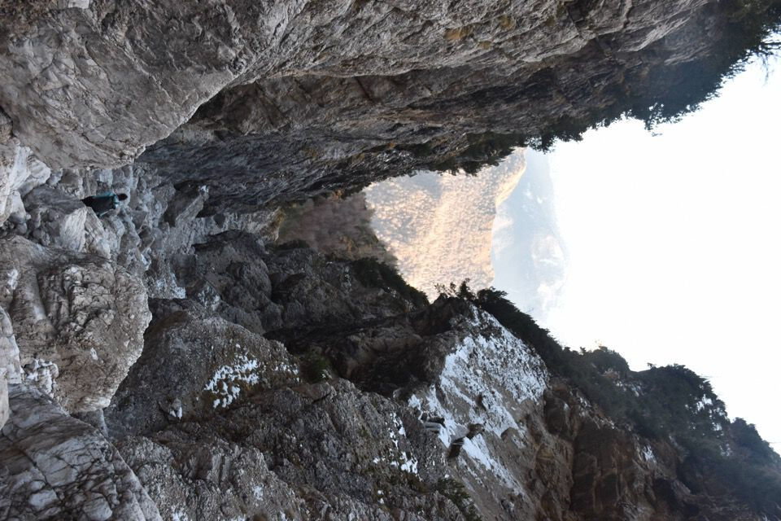
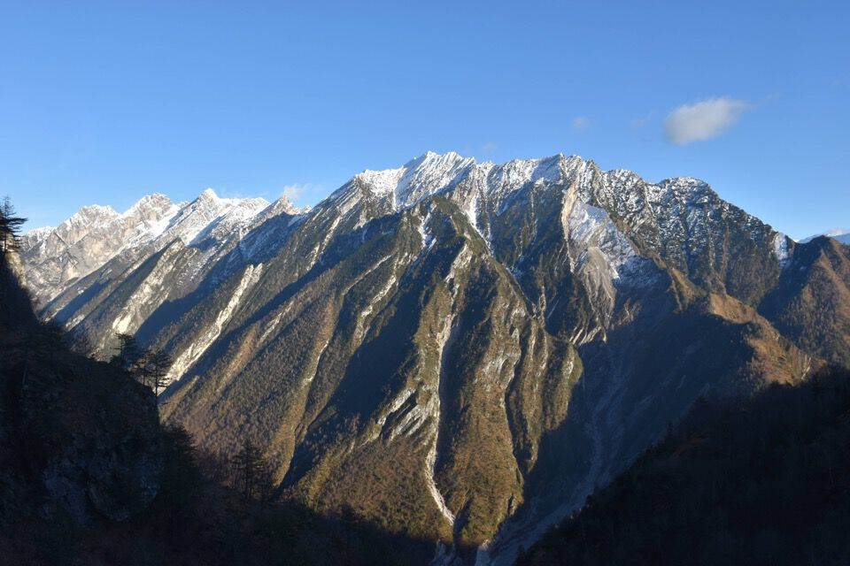

Finalmente l'ho percorsa la théngia de Danut! Questa cengia l'avevo guardata quando in giugno 2024 mettemmo piede nel Ciol de Méne Borsàt, ed in seguito mi accorsi che sulla CTR al 5000 è segnato il toponimo "cengia di Nanut" (ma in posizione errata) e pure sulla cartina a p. 392 del Berti è vagamente indicata. Manca qualunque informazione utile: il bello è proprio questo.
Molto interessante un'osservazione di Piero G.: è probabile che pure qui sia stato operato un errore cartografico, come per la sospetta inversione delle vicine cime Savalon e Settimana. Infatti la Stalla di Sopra e il Col de la Question, entrambi di proprietà dei Borsatti, si trovano alla confluenza del Ciol de Susàna, mentre la stalla Susàna si trova alla confluenza del Ciol de Méne Borsàt. Può essere che i nomi dei due Ciol siano stati scambiati dai tecnici dell'IGM!
A tal proposito mi sovviene fra l'altro che nella Carta Tecnica Regionale la Punta del Borsàt viene indicata come Punta Ciol di Sopra.
Ecco la cartina a p. 392 del Berti, con al centro l'itinerario incriminato.
Andiamo in cerca dell'antica traccia dei clautani per il Bosc de Val: posto da bestie ora "abbandonato" ma un tempo frequentato non solo da cacciatori ma pure da boscaioli e pastori di capre (notizia Piero G.).
Passare lungo begli antri sotto parete mi dà una gioia che è difficile spiegare.
Ricorderemo questa gita: in un delirio collettivo, senza porci troppe domande, iniziamo a traversare a sx trovando subito una linea di cengia.
I primi brividi iniziano immediatamente: traverso molto esposto su loppa.
Vari passaggi strettissimi: la cengia è perfetta e magnifica.
La cengia entra ed esce da un bellissimo anfiteatro: credo sia la più bella cengia che ho mai percorso (vedi qui).

Continuiamo a lungo con passaggi stretti e difficili, fino a che... la cengia finisce. Già molto provato dal percorso, praticamente sbianco quando sento la notizia. Avrei da scriverne a riguardo, ma non è che bisogna scrivere tutto: basta solo dire che bastava guardare un secondo le foto di repertorio che avevo, per rendersi conto che la théngia de Danùt è larghissima e tutta boscosa, nulla di simile a ciò che stavamo percorrendo.
Torniamo indietro: ora su per la "comoda" traccia del Bosc de Val.
Sostanzialmente a questo punto avevo già esaurito tutte le energie...
I contrafforti sud del Turlón, col ciol de Nuci a dx: impressionante.
L'elegante Spiz de val Piovìn.
Oh eccoci finalmente sulla vera cengia de Danùt! Cento volte più larga della prima...
La q1878 della cresta sud della Punta del Borsàt.
La cengia appena percorsa.
Ciol de Méne Borsàt: un luogo stupendo.
Iniziamo a risalire il Bosc de Ciócio de Sòt e con incredulità troviamo i resti di una costruzione a q1200! Se ti sembra poca cosa, vacci e renditi conto in che posto è.
Pietro ci spiega che si trattava di un «cason di boscaioli che tagliarono i faggi in Bosc de Ciócio de Sòt e con due fili a sbalzo mandavano la legna nel Gravon de Caracio». Il legname infatti veniva prima mandato dal Bosc de Ciócio de Sòt al Col de Portada (ovvero la "torretta" in sx orografica del Ciol de Méne Borsàt, alla cui base passa l'itinerario 9.b della Monografia) e poi al Gravon de Caracio.
Cime delle Pale de Ciuone, con la cresta ovest percorsa proprio un mese addietro.
Cornaget e Cimon delle Témpie, quest'ultimo mi ricorda il Monticello delle Marmarole.
Sempre sorvegliati dal Turlón: superbo; si intuiscono sia la «gran cengia» (collegamento Bosc de Val - Forzèl Borsàt) percorsa di recente da Luca B., sia la «cengia di Bepi Nart».
Le Pale de Ciuone: dal Gravon di Caràcio alla cresta ci sono 1300m di dislivello!
Finalmente sullo spallone q1480 a spartiacque fra Ciol de Méne Borsàt e Ciol de Susàna: luogo magnifico e rilassante, non a caso giudicato «altamente panoramico» dalla monografia.
La prospettiva ci mette in difficoltà: a sx Punta Claut, in centro Cima dei Viéres, a dx Punta Susàna.
S'intravede pure lo stretto Forzèl Tramontìn: che ricordi quando in luglio con Luca lo valicammo per poi tornare a ponte Confòz lungo la Costa Spalaviér!
Dov'è la théngia dei Spins?
Staremmo qui tutto il giorno, ma ora è meglio andare.
Mi allarmo quando proprio alla fine troviamo una cengetta molto esposta e all'apparenza infida... ma in realtà del tutto facile.
Finalmente nel Ciol de Susàna.
Resti di teleferica? Sulla «cengia dei Viéres» propriamente detta, che è quell'enorme pala a sud della Punta Claut (la cengia poi continua contornandone la base ad ovest e raggiungendo il Ciol de Giaéda tramite l'arditissimo passaggio de «la gratoléra»), venne eseguito il taglio del mughi negli anni '65/66 ad opera della ditta "Pelin" di Claut per l'estrazione dell'essenza di mugolio (notizia Piero G.).
Il Forzèl Tramontìn, che sembra lontano anni luce!
Sono proprio uno scarso fotografo: la luce del pomeriggio era molto ma molto più calda di quanto appaia in questa foto. Uno spettacolo per gli occhi, lì, appollaiati sul crinale de il Col de la Question a raccontarcela.
La nuvoletta è la ciliegina sulla torta.
La Croda Biancia: passarci sotto sarà per un'altra volta; intanto oggi ci siamo saliti sopra.

Finalmente arriviamo agli Stai de Sora: una splendida traversata.
Speravo di trovare la trave...
***